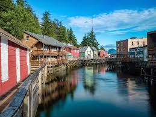

Life in Alaska
The Beautiful Views
Beauty has many faces here; the scenery is magnificent, for sure, but its wildlife is also incredible. Alaska’s human history is fascinating, too. Everything about Alaska is wonderfully photogenic and everything tells a story. Here are some of the most beautiful places in Alaska.This is a box

The Stay
Experience the beauty of Alaska like never before. Indulge in world-renowned fishing, thrilling outdoor adventures, eco-tours, unforgettable bear viewing, and the finest food and lodging the Kenai Peninsula has to offer. Make this journey uniquely yours, blending the best of adventure and comfort at every step.

The Nature
Alaska is a big, wild place. Alaska's parks span climatic zones from the Arctic to boreal forests to coastal forest. There are thousands of miles of coastline and vibrant marine life. Terrestrial wildlife and the soundscapes that surround and include them. Alaska is geologically active with glaciers, volcanoes, geohazards, and permafrost. Explore the many wonderous facets of Alaska's nature.
Island life

National Park Recommends